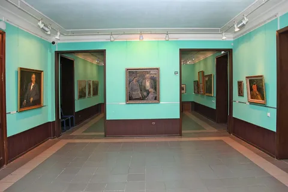

Музей изобразительных искусств
Уральский эрмитраж
Ирбитский государственный музей изобразительных искусств — это настоящая жемчужина города и один из самых известных музеев Урала. Его уникальность в том, что в небольшом провинциальном городе собрана огромная коллекция мирового уровня.

Музей был основан в 1970-х годах, когда в Ирбит были переданы сотни картин из запасников Эрмитажа и других крупных музеев страны. Сегодня здесь можно увидеть полотна выдающихся западноевропейских мастеров, русских художников XVIII–XX веков, а также богатую коллекцию уральского декоративно-прикладного искусства и старинного фарфора.
Особое место занимает коллекция ирбитских изразцов и уникальные экспонаты, связанные с историей Ирбитской ярмарки. Это место, где история провинциального купеческого города встречается с мировым искусством.